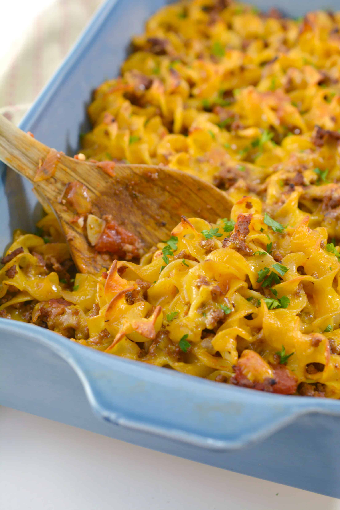

Cheesy Beef Noodle Casserole

This is definitely kid approved. My daughter is the pickiest eater; she and even her friends will ask for it again and again.
Ingredients
- 1 (.87 ounce) package brown gravy mix
- ½ cup water
- ½ cup milk
- 1 pound ground beef
- 1 small onion, diced
- 1 (4.5 ounce) can sliced mushrooms, drained
- 3 cloves garlic, minced
- 1 ½ cups tomato sauce
- 1 cup diced tomatoes
- 1 ½ teaspoons Italian seasoning
- 1 teaspoon dried oregano
- 1 teaspoon dried basil
- salt and ground black pepper to taste
- 1 cup shredded Cheddar cheese
- 1 cup shredded mozzarella cheese
- ½ (16 ounce) package egg noodles
- ½ cup grated Parmesan cheese
Directions
- Preheat oven to 375 degrees F (190 degrees C).
- Stir gravy mix, water, and milk together in a bowl until dissolved and smooth.
- Heat a large skillet over medium-high heat and crumble in ground beef; add onion, mushrooms, and garlic. Cook and stir until the beef is evenly browned, 10 to 15 minutes. Drain and discard any excess grease.
- Stir gravy mixture, tomato sauce, diced tomatoes, Italian seasoning, oregano, and basil into ground beef mixture. Season with salt and pepper. Bring beef-tomato mixture to a boil, reduce heat, cover skillet with a lid, and simmer until heated through, 10 minutes.
- Stir Cheddar cheese, mozzarella cheese, and egg noodles into beef-tomato mixture; pour entire mixture into a 9x13-inch casserole dish. Top casserole with Parmesan cheese. Cover dish with aluminum foil.
- Bake in the preheated oven until cheese is melted and noodles are cooked, about 25 minutes.
Related Recipes